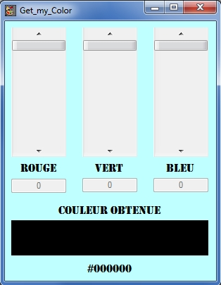
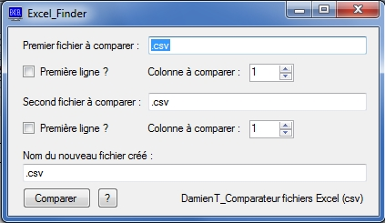

|
Une version logiciel du pendu proposant 3 niveaux de difficultés ( avec ou sans timer ). Ce pendu garde en mémoire vos parties gagnées et perdues, et vous permets de rajouter ou supprimer des mots non existants à son dictionnaire.
ATTENTION: Ne pas supprimer un fichier du dossier afin de permettre le bon fonctionnement du logiciel. |

|
Une version logiciel du très célèbre Morpion, celui ci vous permettra de jouer à 2 sur un ordinateur, vous permettant ainsi d'économiser feuille et crayon. |
|  | Une application permettant à son utilisateur d'obtenir un rendu de la couleur qu'il souhaite en jouant sur le rouge, le vert et le bleu. Il obtient alors l'aperçu visuel de sa couleur ainsi que son code rgb et son code héxadécimal. |
|  |
Une application permettant à son utilisateur d'obtenir un nouveau fichier excel regroupant toutes les informations identiques entre 2 fichiers excels au format csv séparé par des points virgules. Ce logiciel vous demande la colonne a comparer dans les 2 fichiers, si vous cochez "Première ligne ?" le logiciel va alors créer sur votre nouveau fichier une ligne regroupant les informations ( exemple: Nom,Prénom,Date,etc...) Pour vous aider, vous avez le bouton d'aide "?" |